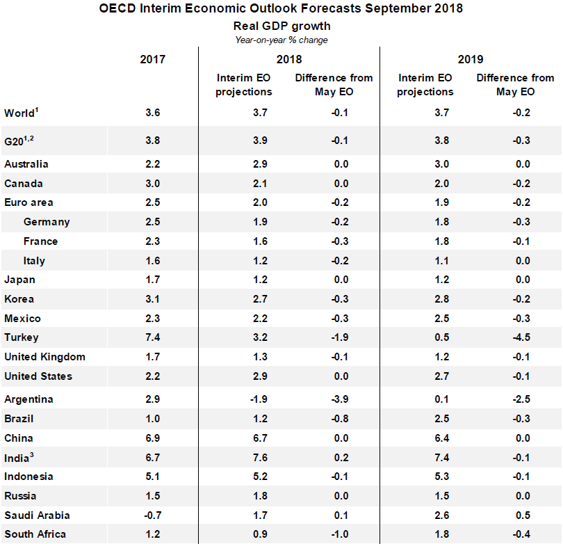
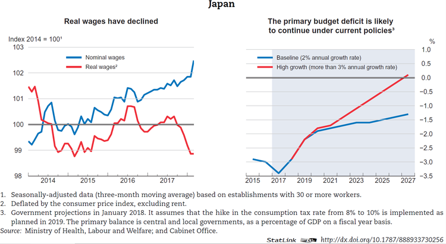
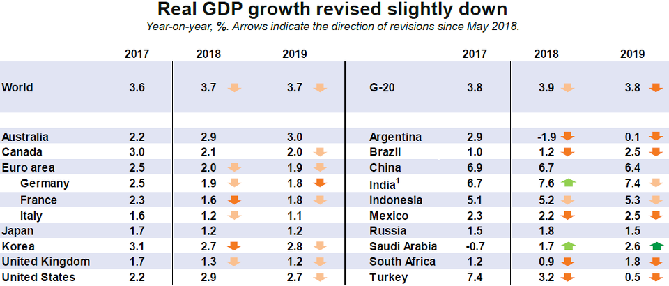
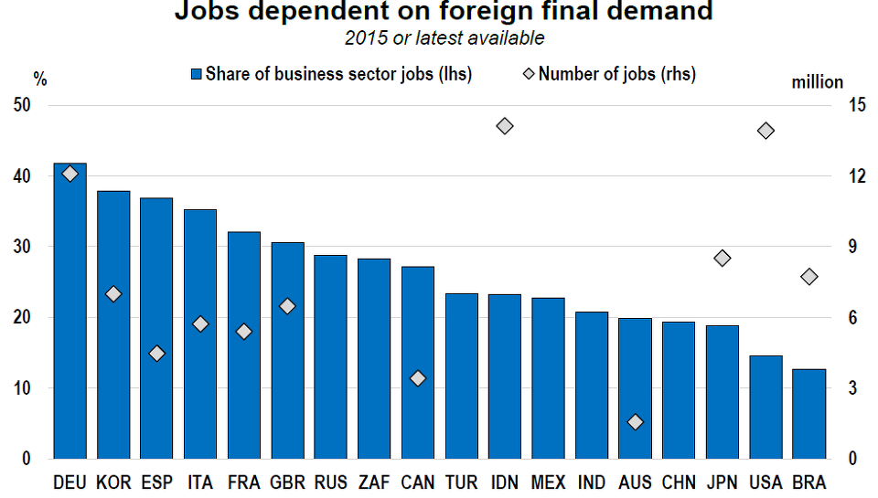
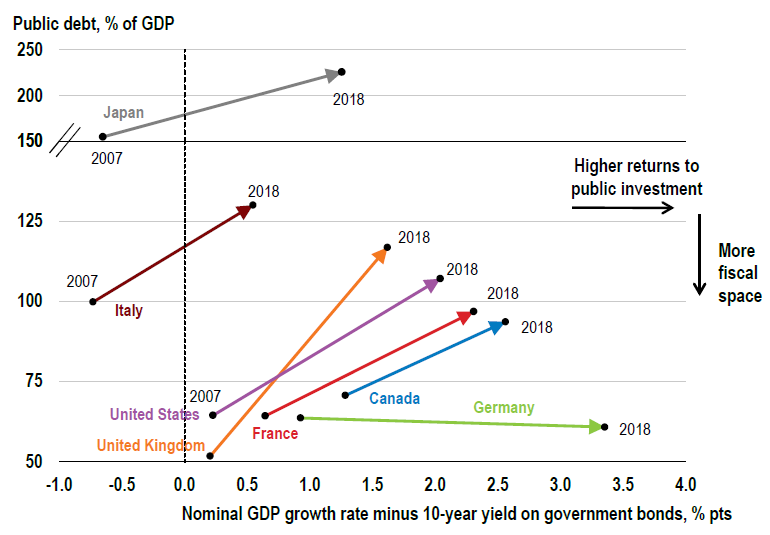

한국 2분기 성장률이 일본보다 낮다고요 ?
게시: 2018-09-30T21:20:46+09:00
오늘 "한국 2분기 성장률 美日보다 낮아…G20·OECD 평균에도 미달"이라는 기사가 네이버 포털 1면에 떴습니다. 네이버야 항상 그렇듯이 수천개의 '이게 다 종북좌빨 문재앙 때문'이라는 저주성 댓글이 도배질되었습니다. 하지만 이 기사가 사실일까요 ?
결과적으로 사실이긴 합니다. 9월 17일자로 나온 G20 2분기 성장률에 그렇게 나옵니다.
http://www.oecd.org/sdd/na/g20-gdp-growth-second-quarter-2018-oecd.htm
"일본 GDP 성장은 전분기의 0.2% 감소에 이어 0.7% 성장으로 반등했다. 전분기의 0.5%에서 1%로 미국에서도 상당히 속도를 높였고, 러시아(0.4%에서 0.9%로), 중국(1.4%에서 1.8%로)도 마찬가지였다. 실질 GDP 성장은 캐나다(0.4%에서 0.7%로)에서도 뛰었고, 영국(0.2%에서 0.4%로), 독일(0.4%에서 0.5%로)과 브라질(0.1%에서 0.2%로)로 약간 뛰었다.
반면, 터키(1.5%에서 0.9%로)와 한국(1.0%에서 0.6%로)에서 성장은 상당히 느려졌고, 호주(1.1%에서 0.9%로)와 인도(2.0%에서 1.9%로), 이탈리아(0.3%에서 0.2%로)에서는 약간 느려졌다. GDP 성장은 인도(1.3%)와 프랑스(0.2%)에서 안정적이었으나 멕시코(작년의 1.0% 성장에 이어)에서는 0.2%, 남아프리카(작년의 0.7% 감소에 이어)에서는 1.0% 감소했다."
GDP growth rebounded in Japan, to 0.7% in the second quarter of 2018, following a contraction of 0.2% in the previous quarter. It also picked-up significantly in the United States (to 1.0%, from 0.5% in the previous quarter), Russia (to 0.9%, from 0.4%) and China (to 1.8%, from 1.4%). Real GDP growth also picked-up in Canada (to 0.7%, from 0.4%), and to a lesser extent, in the United Kingdom (to 0.4%, from 0.2%), Germany (to 0.5%, from 0.4%) and Brazil (to 0.2%, from 0.1%).
On the other hand, growth slowed significantly in Turkey (to 0.9%, from 1.5%) and Korea (to 0.6%, from 1.0%), and, to a lesser extent, in Australia (to 0.9%, from 1.1%), India (to 1.9%, from 2.0%) and Italy (to 0.2%, from 0.3%). GDP growth was stable in Indonesia (1.3%) and France (0.2%) but GDP contracted by 0.2% in Mexico (following growth of 1.0% in the previous quarter) and South Africa (following a contraction of 0.7% in the previous quarter).
저는 애초에 국내 기사를 읽고 굉장히 의심스러웠습니다. 미국이야 요즘 워낙 경기가 좋으니 그렇다치고, 일본보다 한국이 성장률이 낮다는 것은 매우 의심스러워 이번에도 이 의심스러운 뉴스의 소스를 찾아봐야겠다는 생각을 했습니다. 사실 해외 소스를 인용한 국내 기사는 다 원본과 대조하기 전에는 믿기가 어렵다는 생각을 했거든요. 이번에는 특히 저 기사의 소스가 OECD의 최근 '중간 경제전망'(Interim Economic Outlook)' 보고서라고 밝혔기 때문에 검증이 쉽다고 생각했습니다.
그러나 댓글의 돌로레스님이 알려주신 것을 보고야 알았습니다만, 저 기사에서 인용했다고 적은 9월 20일자의 Interim Economic Outlook 보고서 주요 내용에는 한국 경제에 대한 저런 나쁜 내용 나오지 않지만, 9월 17일자의 'G20 GDP Growth - Second quarter of 2018, OECD' 보고서에는 위와 같이 그런 말이 나오더군요. 지적해주신 돌로레스님 고맙습니다. 그에 따라 아래 내용도 수정했습니다.
아래는 원래 제가 한국과 일본 관련하여 옮겨적은 9월 20일자 OECD '중간 경제전망'(Interim Economic Outlook)' 보고서의 원본 주요 내용입니다. 그 원본은 아래에서 여러분 모두가 보실 수 있습니다.
http://www.oecd.org/eco/outlook/economic-outlook/
그 중에서도 언론에 배포한 보고서는 아래 문서입니다.

일본의 중간 경제 전망 성장 예상치는 1.2%이고 5월에 전망한 것 대비 그대로입니다. 한국은 2.7%로서 일본의 2배가 훌쩍 넘습니다. 다만 5월 전망한 것 대비 -0.3%로서 더 줄었습니다. 대부분의 OECD 국가들이 전망치가 5월 대비 마이너스로 내려갔는데, 이는 미-중 무역 분쟁으로 인한 무역 감소 때문입니다. 그 문제에 대해서, 국제 무대에서는 꼬꼬마에 불과한 한국으로서는, 특히 한국 정부로서는 할 수 있는 여지가 그다지 많지 않습니다. 2019년도 마찬가지입니다. 일본은 1.2%, 한국은 2.8%를 예상하고 있습니다. 이것만 보면 한국 경제가 일본보다 성장률이 낮다는 생각을 하기 어렵습니다.
G20 평균 대비 낮은 것은 사실 아니냐 라고 반문하실 수 있습니다. 예, 낮습니다. 그러나 그건 예전부터도 낮았고, 앞으로도 계속 낮을 겁니다. G20에는 요즘 잘 나가는 미국 외에도, 성장률이 높을 수 밖에 없는 중국, 인도, 인도네시아 등이 포함되어 있습니다. 그들과 성장률 경쟁을 하는 것은 불가능할 뿐더러, 의미도 없습니다. 독일이 1.9% 성장, 멕시코는 2.2%, 캐나다가 2.1%, 프랑스가 1.6% 성장하는 것에 비하면 한국은 그다지 나쁜 편은 아닙니다.
이 보고서 본문 중에 한국 관련 부분은 딱 2군데입니다. 제 번역도 믿으시면 안되니 원문도 아래에 그대로 옮겨 드립니다. 한마디로, 한국 경제는 한국 정부의 재정 확대 노력으로 견고한 성장률을 이어나갈 전망이라는 내용입니다. 즉, 한국 정부는 무역 분쟁 등 악조건 속에서도 경제를 살리기 위해 적절한 조치를 하고 있습니다.
"대부분의 선진 경제국에서, 비록 몇몇 국가에서는 예상보다 더 빨리 조절이 되기는 했지만, 생산 성장은 전반적으로 예측된 경향과 비슷하거나 그 이상의 성장을 보였다. 상당한 규모의 재정 완화가 미국에서, 그리고 한국을 포함한 몇몇 국가들에서 단기 성장률을 끌어올리는데 도움이 되고 있다."
Output growth generally remains at or above estimated trend rates in most advanced economies, despite moderating more quickly than expected in some. Sizeable fiscal easing is helping to boost near-term growth in the United States and a number of other economies, including Korea.
"비록 세계 및 지역내 무역 갈등이 고조되면서 불확실성이 있긴 하지만, 호주와 한국에서는 강력한 내수 수요가 계속될 것이다. 호주의 GDP 성장률은 2018년과 2019년에 약 3% 정도가 될 것으로 예상되는데, 이는 강한 투자 성장과 든든한 일자리 생성에 힘입은 것이다. 한국은 상당한 규모의 재정 완화가 가구 소득 및 소비를 촉진시켜 GDP 성장이 올해와 내년 2.75%로 전망된다."
Strong domestic demand is set to continue in Australia and Korea, despite the uncertainty posed by rising global and regional trade tensions. GDP growth is projected to be around 3% in Australia in 2018 and 2019, helped by strong investment growth and solid job creation. In Korea, sizeable fiscal easing should continue to boost household incomes and spending, with GDP growth being around 2¾ per cent this year and next.
한편, 일본에 대해서는 다음과 같이 평가했습니다. 일본이 그나마 1.25%라도 성장하는 것은 노동력 부족 덕분에 기업들이 시설 투자를 강화하는 것과 관광 활성화가 큰 도움이 되었다는 진단을 하네요. 노동력 부족이 투자 측면에서 긍정적인 부분도 있군요.
"일본의 GDP 성장은 약간의 재정적인 역풍에도 불구하고 2018년과 2019년에 1.25%에 근접할 것이다. 사업 투자는 높은 기업 수익과 심각한 노동력 부족, 그리고 관광 역량 구축 덕택에 여전히 강세일 것으로 보인다. 민간 소비 성장은 마침내 급여 성장률이 다소 오를 징조가 있음에도 불구하고 보통 정도를 유지할 것이다."
GDP growth in Japan is set to be close to 1¼ per cent in 2018 and 2019, despite mild fiscal headwinds. Business investment is set to remain strong, buoyed by high corporate profits, severe labour shortages and capacity building for tourism. Private consumption growth remains moderate, although there are finally signs of a modest upturn in wage growth.
이 보고서 외에도, OECD site에서는 각 국가별로 전망치를 따로 내놓은 것이 있습니다. 한국에 대해서는 아래와 같이 되어 있습니다. 제가 볼 때는 한국 경제의 난제들을 비교적 담담하게 이야기하면서 정부가 재정 확대를 통해 잘 해나가고 있다고 평가한 것으로 보입니다.
http://www.oecd.org/eco/outlook/korea-economic-forecast-summary.htm
"경제 성장은 2019년까지 3% 정도를 예상하는데, 수출 성장 강세와 재정 확대가 주택 및 담보 대출에 대한 더 강한 규제의 충격으로 건설 투자가 약해지는 효과를 보완해주기 때문이다. 인플레는 2% 목표치를 향해 오를 것으로 예측되는데, 경상 수지 흑자는 GDP의 4%대에 수렴할 것이다.
공공 일자리 증가와 최저 임금의 급격한 인상, 그리고 사회적 소비 확대에 의해 주도되는 정부의 '소득주도 성장' 전략은 제조업과 서비스업 사이, 그리고 대기업과 중소기업 간의 큰 생산성 차이를 좁히기 위한 구조 개혁의 도움을 받아야 할 것이다. 2018년의 재정 확대책은 성장을 지지하는데는 적절하지만, OECD 국가들 중 가장 빠른 속도인 인구 노화를 감당할 장기적인 재정 정책이 수반되어야 할 것이다. 인플레가 목표치보다는 낮으므로, 통화 수용책은 점진적으로 해제되어야 할 것이다."
Economic growth is projected to remain around 3% through 2019, supported by stronger export growth and fiscal stimulus that offset the impact of tighter regulations on housing and mortgage lending, which will slow construction investment. Inflation is projected to rise toward the 2% target, while the current account surplus narrows to around 4% of GDP.
The government's “income-led growth” strategy, driven by increased public employment, a sharp rise in the minimum wage and higher social spending, needs to be supported by structural reforms to narrow large productivity gaps between manufacturing and services, and large and small firms. The fiscal stimulus planned for 2018 is appropriate to support growth, but should be accompanied by a long-term fiscal framework to cope with population ageing, which will be the most rapid among OECD countries. With inflation below target, monetary accommodation should be withdrawn gradually.
주요 경제 대국인 일본에 대해서도 당연히 평가가 있습니다. 일본 치고는 나쁘지 않은 성장률인데, 문제는 공공 채무네요. 천문학적인 정부 부채는 일본 경제의 고질병인데, 이 OECD에서도 역시 그에 대해 우려하고 있습니다.
http://www.oecd.org/eco/outlook/japan-economic-forecast-summary.htm
경제 성장률은 수출과 사업 투자, 민간 소비에 힘입어 2018년과 2019년에 1.25%로 예상된다. 세계 무역 증가와 함께 노동력 부족에 당면한 기업들이 사업 투자와 고용을 늘릴 것이다. 비록 가구 소득은 2019년 1.5% 정도로 더 높아진 인플레로 인해 상쇄되겠지만, 급여는 약간 오를 것으로 예상된다. 경상 수지 흑자는 2019년까지 GDP 대비 4% 가까지 유지될 것이다.
GDP 대비 정부 부채는 OECD 영역 기록 역사상 최고치이고, 심각한 위험을 드리운다. 지속 가능한 재정을 이루기 위해서는 급속한 인구 노화에 직면한 상황에서의 소비 통제와, 2019년부터 인상되는 것으로 시작될 예정인 소비세의 점진적 인상 등을 포함하는 세밀한 통합 프로그램이 필요하다. 일본 중앙은행은 목표 인플레 수치인 2%에 도달할 때까지 통화 확대 정책을 계속할 것으로 예상되는데, 그건 적절하다고 본다. 생산성을 제고시키고 고용을 유지하기 위한 구조 개혁의 지속은 지속 가능한 재정과 복지를 이루기 위해 우선적으로 필요한 조치이다.
Economic growth is projected to reach 1¼ per cent in 2018 and 2019, supported by exports, business investment and private consumption. In addition to buoyant international trade, firms facing labour shortages will increase business investment and employment. Wages are projected to edge up, although the gains to households will be partially offset by higher inflation, which is expected to rise to 1½ per cent in 2019. The current account surplus is projected to remain close to 4% of GDP through 2019.
Government debt relative to GDP is the highest ever recorded in the OECD area, which poses serious risks. Achieving fiscal sustainability requires a detailed consolidation programme that includes measures to control spending in the face of rapid ageing, and gradual hikes in the consumption tax rate, beginning with the planned increase in 2019. The Bank of Japan is expected to maintain its expansionary monetary policy until the 2% inflation target is achieved, which is appropriate. Continued structural reforms to boost productivity and sustain employment are also a priority to achieve fiscal sustainability and improve well-being.
거기에 덧붙여 일본은 노동 인력 감소로 실업 문제는 해결되었을지 몰라도, 실질 임금은 오히려 감소하고 있는 그래프를 대표 이미지로 아래와 같이 실어놓았네요.

그 외에도 OECD는 9월의 중간 경제 전망에 대한 프리젠테이션 차트를 별도로 제공했습니다.
주요 차트들은 아래와 같습니다. 요약하면, 미중간 무역 분쟁이 심각해져가는 이때 해외 무역 의존 빈도가 높은 국가는 타격을 입을 수 밖에 없는데, 독일에 이어 한국이 OECD 국가 중 해외 무역에 의존하는 일자리 비율이 제일 높은 국가로 나옵니다. 결국 수출 주도형 경제 구조인 한국의 일자리 문제는 우리의 수출 시장인 외부 환경 변화에 너무나 취약할 수 밖에 없습니다. 이에 대해 정부로서는 재정 확대 외에는 단기 대책이 있을 수가 없을텐데, 장기적으로는 대기업의 수출 주도 성장을 이제는 고쳐나가야 하지 않을까 싶습니다. 그러자면 내수 시장이 커야 하는데, 내수 시장이 크려면 가계에 쓸 돈이 있어야 합니다. 그러니 기업의 수익을 좀더 가계에 나눠줘야 하고, 그것이 결국 소득주도 성장인 것이지요. 저는 세금을 올려서 정부가 강제로 기업에서 가계로 돈을 옮겨주는 것보다는 그것이 더 낫다고 생각합니다. 물론 부작용이 있겠지요. 그러나 여태까지의 대기업 주도의 수출 주도 성장도, 아니 그 어떤 경제 정책에도 부작용과 한계는 있습니다.


그리고 역시나 일본의 정부 부채는 아예 그래프 Y축에 점프 영역을 둬야 할 정도로 차원이 다르네요. 양도 많지만 증가 속도도 굉장히 높은 편입니다. 이렇게 가면 갈 수록 눈덩이 굴리듯 늘어나는데, 저 위 평가에서 OECD가 자꾸 '지속 가능한 재정'이라는 말을 쓰는 것이 이해가 갑니다. 아무리 저 정부 채무 대부분이 국내 자본에게 빚진 것이라고 해도, 대체 언제까지 저렇게 늘어날 수 있을까요 ? 일본 애들끼리 농담할 때 자국 정부 채무 액수를 보면 우주가 작게 느껴진다는 것이 농담이 아닙니다.
